Combined Transects
Begin with the history of the ridge. Follow the paths down through the sections to the forest platform and the isolated bungalow.
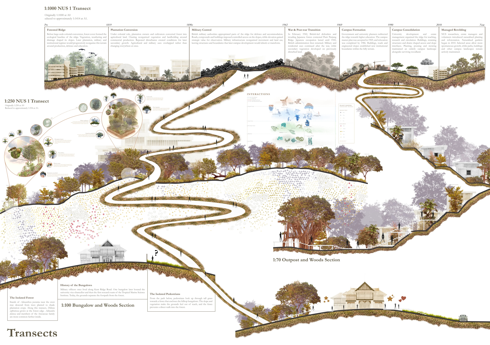
Kent Ridge, Singapore · LAD3001
Where We Retreat,
Forests Return
Where We Retreat, Forests Return reimagines Kent Ridge as a living military heritage landscape, where forest succession, historical memory and everyday campus life shape one another. Although the ridge lies close to the university’s daily activities, its wooded slopes and military remnants remain distant from everyday experience. The project introduces selective access guided by the forest itself: roots, vegetation and terrain determine where paths can pass, where they must pause, and where human presence should give way. Lightweight steel walkways negotiate these conditions, connecting moments of movement, observation and encounter.
Along this network, former military bungalows are reactivated as spaces for heritage interpretation, environmental learning and shared activities, while the central outpost becomes a place to witness the evolving relationship between built remains and forest growth. Walking becomes a way of reading the landscape by following its contours, approaching its traces and discovering histories within the vegetation. Here, retreat is a deliberate design gesture: making room for ecological processes while creating meaningful ways for people to return. The forest continues to grow, and the memory of human occupation remains present within it.
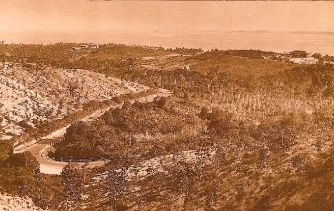
Nodes & Connections
Where can a walk enter the forest? Select a marked location to see its field photograph, then compare the proposed connections.
- A–C
- Heritage sites
- 1–8
- Potential intervention points
- 9–11
- Cut-and-fill areas · No entry
- 12–14
- Traces of planting conservation
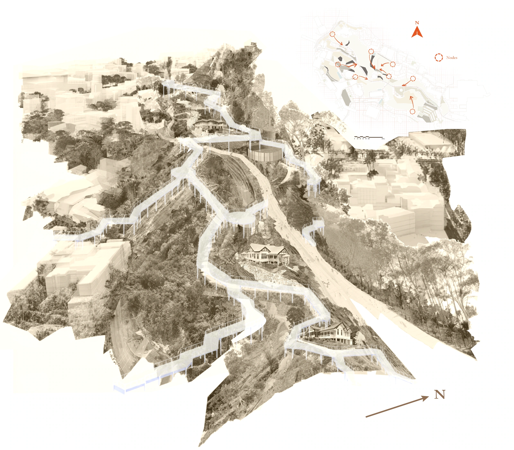
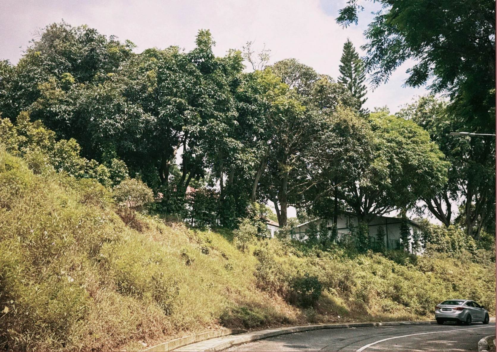
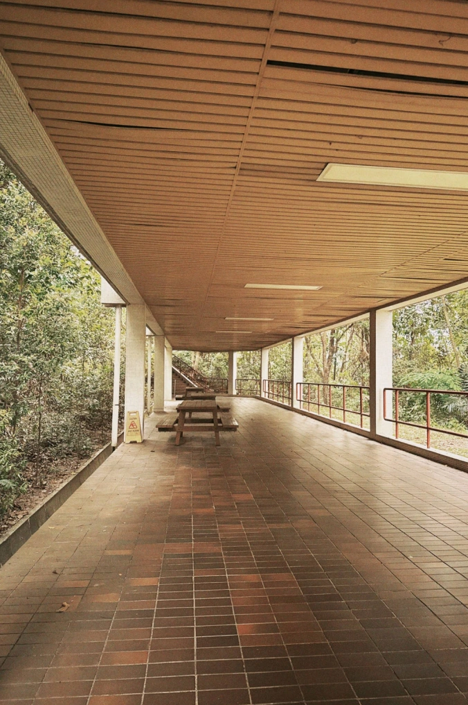
Forest Decides
The route is provisional. Read four drawings of the same ground to see where a path shifts, remains unbuilt or is returned to the forest.
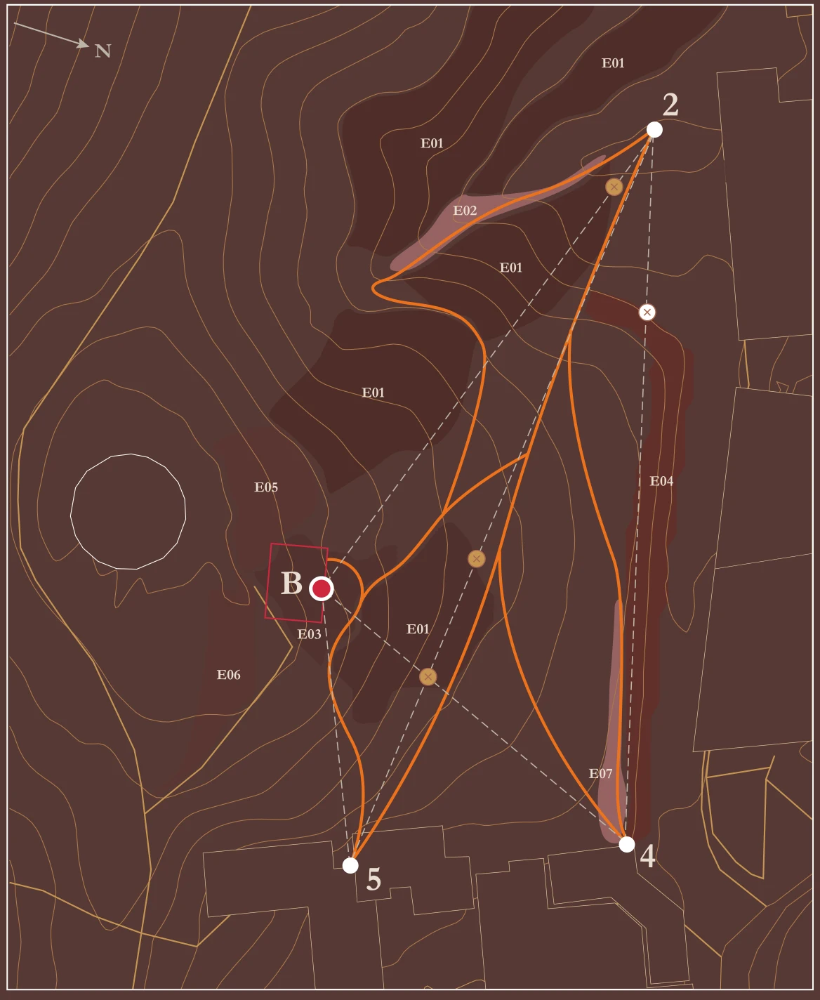
The Trail
At the scale of one tree, distance becomes a design decision. Read the protection zone alongside the modular walkway and its changing relationship to the forest floor.
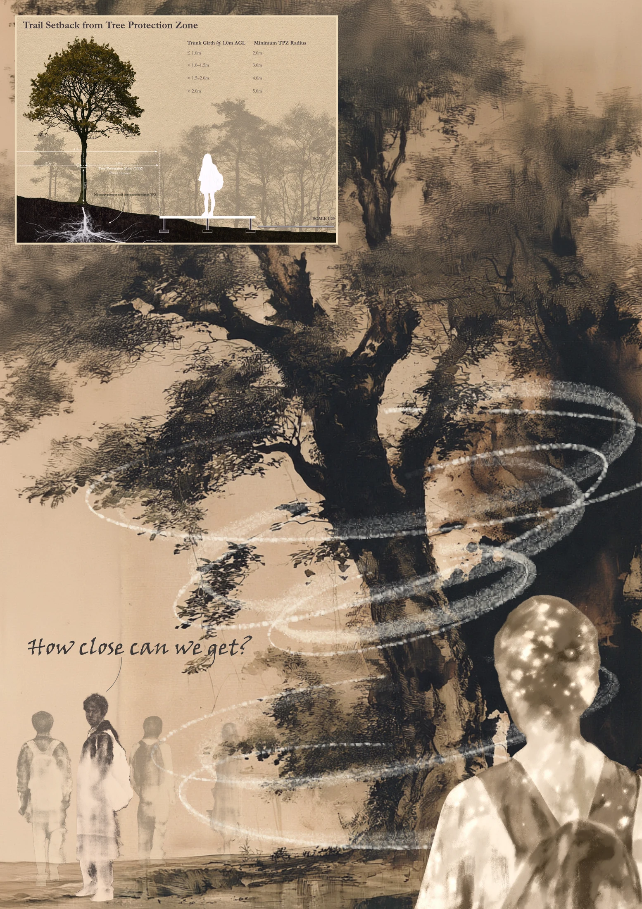
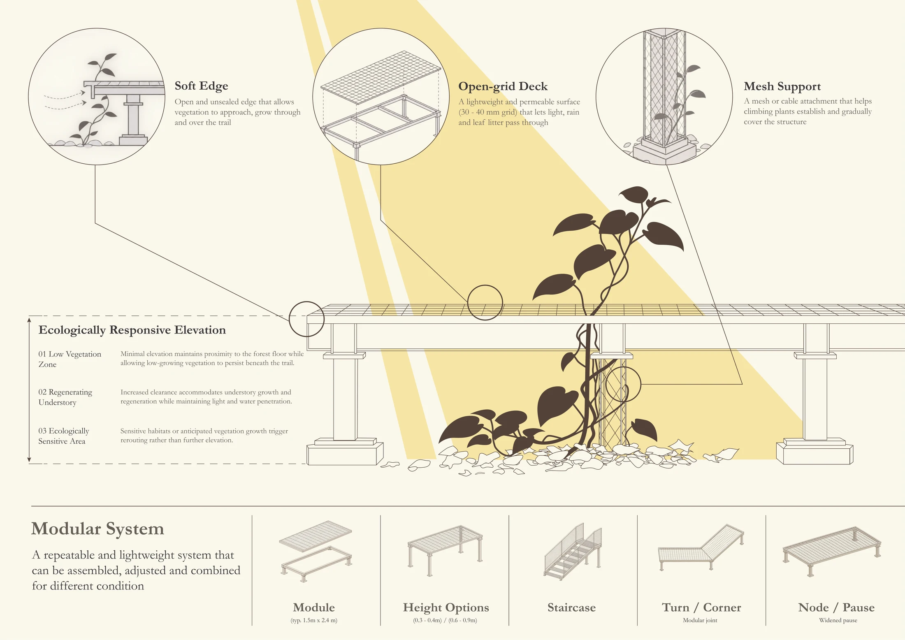
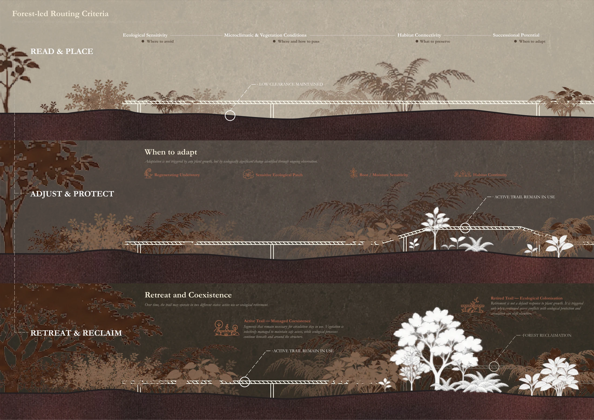
Historical Traces
The walk leads to two traces of Kent Ridge’s military past. At the bungalows, people gather to read the history of the ridge. At the ancillary outpost, a platform brings them close to the ruins while the forest grows through them.
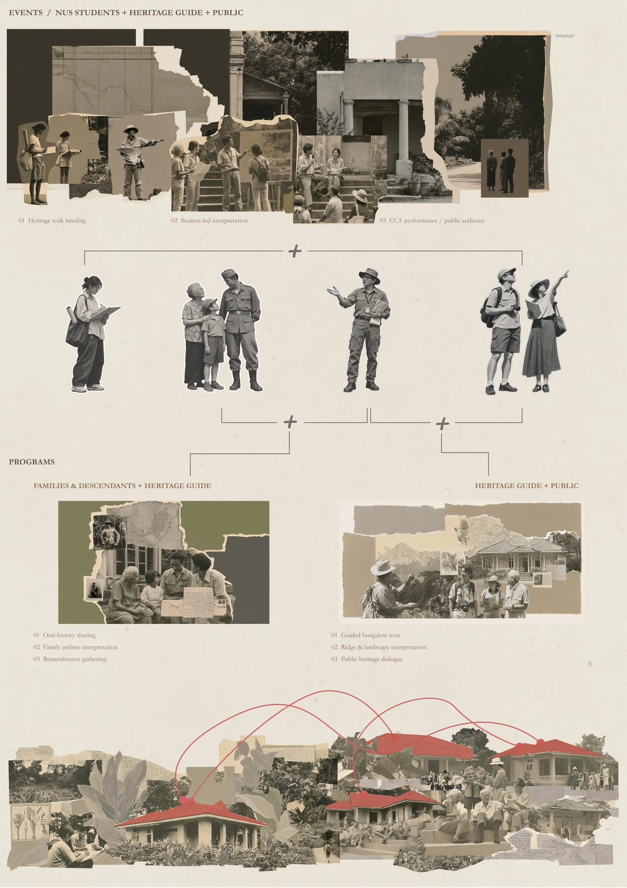
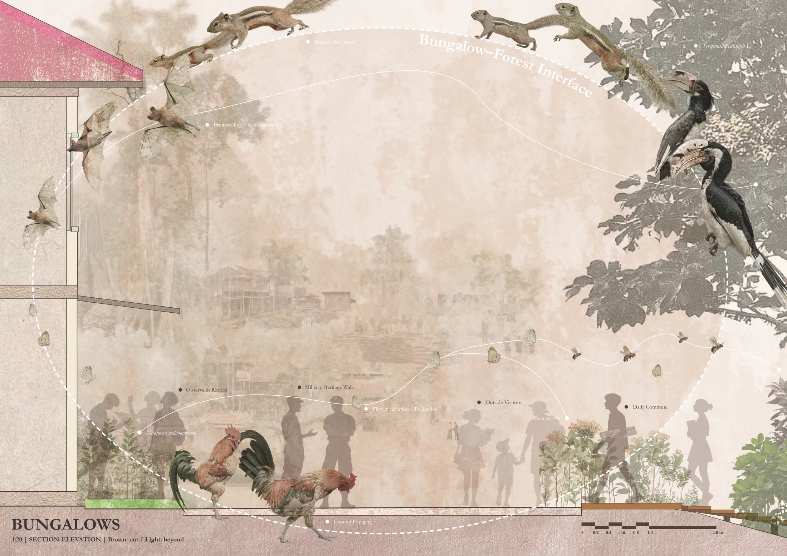
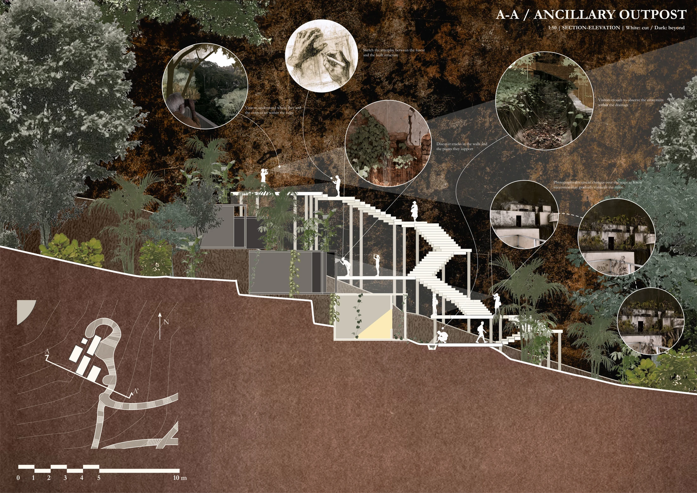